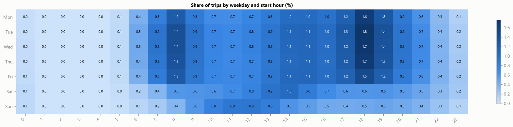
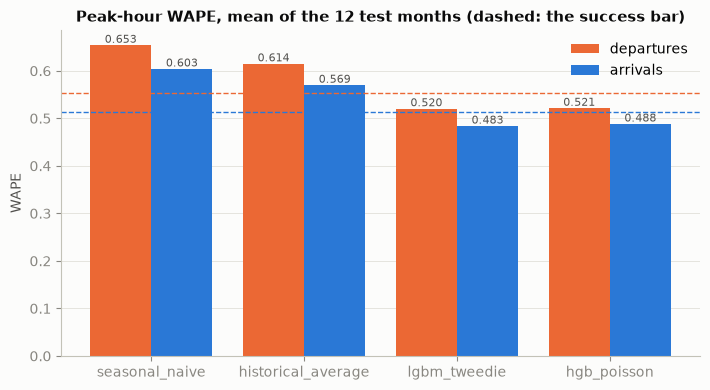
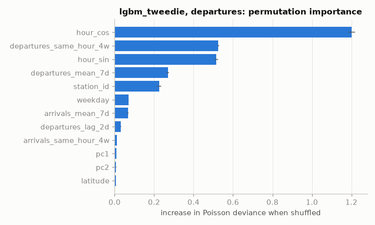
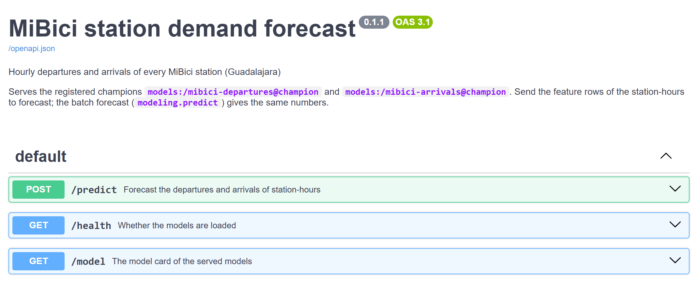
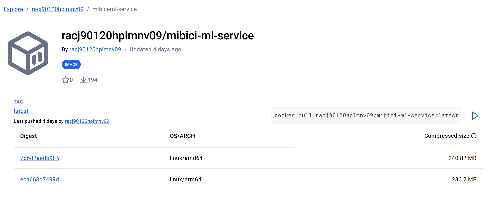
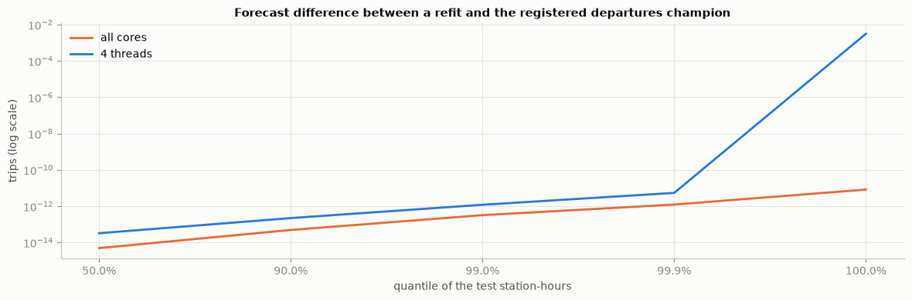
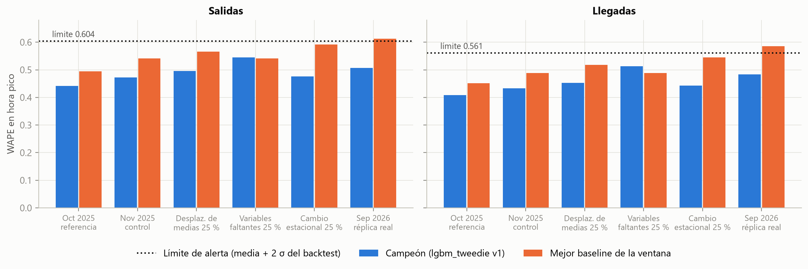
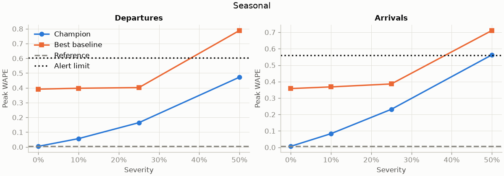
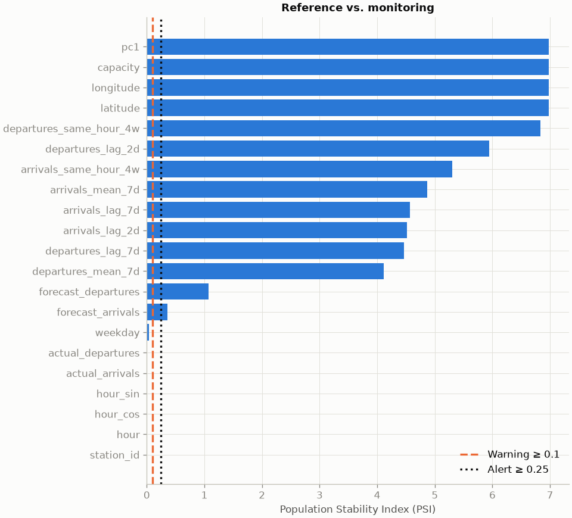

Resumen ejecutivo. MiBici, la bicicleta pública de Guadalajara, pierde viajes cuando una estación se queda sin bicicletas o sin anclajes, y su equipo de redistribución necesita saber la noche anterior qué estaciones se vaciarán o llenarán. En la Fase 1 convertimos 12 años de datos abiertos en una tabla estación‑hora trazable: cinco etapas versionadas en MLflow y encadenadas por digest. En la Fase 2 entrenamos 2 baselines y 5 candidatos, ajustamos los finalistas y los evaluamos con un backtest de 12 meses. El campeón, LightGBM con pérdida Tweedie, reduce el WAPE en hora pico 15.4 % (salidas) y 15.1 % (llegadas) frente al mejor baseline, y cumple el criterio de éxito que fijamos en el ML Canvas antes de entrenar. En la Fase 3 lo llevamos a operación. Lo servimos con FastAPI en una imagen Docker publicada, que da los mismos pronósticos que el batch con diferencia 0. Comprobamos que se reproduce en un contenedor limpio y en otras máquinas, cubrimos el pipeline con 307 pruebas automáticas y montamos un monitoreo de drift con umbrales, alertas y una acción para cada caso. Al replicar septiembre de 2026, ese monitoreo detectó las ~100 estaciones nuevas de la red.
pytest -q, en 3 min 24 s (Windows)POST /predict y los del batch; imagen amd64 y arm64Cada cifra proviene de un run de MLflow, de un notebook ejecutado, de un documento de verificación del repositorio o de un comando, y el texto dice de cuál. Las de las fases 1 y 2 son las de los reportes entregados, que se incluyen completos como anexos A y B al final de este PDF.
El problema. Cada viaje sale de una estación y termina en otra, así que las bicicletas se acumulan donde la gente llega y se agotan donde sale. En la Fase 1 los datos mostraron que el desbalance es grande, estructural y predecible:
Por qué ML y no una regla. Un promedio histórico por estación capta la semana típica, pero no la tendencia, el quiebre por COVID ni las interacciones estación × hora × día. Tampoco puede pronosticar las estaciones nuevas, que no tienen historia. Por eso planteamos un modelo global de conteo y dejamos las reglas simples como los baselines que debe superar. El criterio de éxito se fijó antes de entrenar: WAPE en horas pico al menos 10 % menor que el del mejor baseline, sin ningún grupo de estaciones peor que ese baseline.
| Característica del problema | Cómo guió la solución | Sección |
|---|---|---|
| Conteos por hora, dispersos (54.6 % de ceros) y sesgados | Pérdida Poisson/Tweedie; WAPE y devianza como métricas, no el error cuadrático | 3.2, 3.3 |
| Serie de tiempo con tendencia y un quiebre por COVID | Partición temporal, validación temporal en el ajuste y backtest de origen móvil | 3.3 |
| La decisión se toma la noche anterior | Solo variables conocidas con 48 h de anticipación; batch nocturno y API en línea | 3.2, 3.5 |
| ~480 estaciones que comparten patrones, y estaciones que abren cada mes | Un modelo global por objetivo con perfiles de uso PCA; monitoreo de estaciones no vistas | 3.3, 3.8 |
| Datos que se publican cada mes y una red que cambia | Contrato de datos, linaje por digest, reentrenamiento reproducible y monitoreo de drift | 3.1, 3.7, 3.8 |
Características del problema, observadas en los datos de la Fase 1, y la decisión que tomamos con cada una.
POST /predict (FastAPI) en la imagen Docker 0.1.1, con los mismos modelos y las mismas cifras que el batch.SEED = 42 y run snapshot; tolerancia 10−4 en LightGBM por el número de hilos.champion solo si el candidato pasa el backtest. Negocio: estación‑horas sin bicicletas o sin anclajes y km de camión por bicicleta redistribuida.Machine Learning Canvas v1.2 (Dorard, 2015) del proyecto, condensado y actualizado con la Fase 3 (§5 predicciones, §8 reproducibilidad, §10 monitoreo). El completo está en references/ml-canvas.md.
Este modelo no se entrena una vez y se olvida. Cada mes llegan datos nuevos con los que hay que reentrenarlo, debe servirse cada noche y su desempeño cambia con la red: ~100 estaciones nuevas en 2026 y un récord de demanda en septiembre. En un sistema así, el código del modelo es una parte pequeña. El riesgo está en los datos, la configuración, el entorno y el servicio que lo rodean, la «deuda técnica oculta» de Sculley et al. (2015). Por eso adoptamos MLOps: automatizar y versionar cada paso del ciclo de vida para que el modelo se pueda reconstruir, auditar y operar (Kreuzberger et al., 2023). Cada práctica cubre un riesgo concreto del caso:
| Riesgo en este proyecto | Práctica MLOps | Dónde quedó |
|---|---|---|
| El origen cambió de formato en 12 años; un mes mal leído contamina todo | Contrato de datos y versionado por digest de cada etapa | Fase 1: 5 runs de MLflow encadenados por digest |
| Elegir el modelo con la métrica que más conviene después | Criterio de éxito fijado antes; tracking de cada experimento | Fase 2: 195 runs, backtest de 12 meses |
| No saber qué modelo está en producción ni con qué datos se entrenó | Model Registry con alias, descripción, digests y commit | Fase 2: mibici-<objetivo>@champion |
| Un cambio rompe el pipeline sin que nadie lo note | Pruebas unitarias y de integración con un solo comando | Fase 3: 307 pruebas, pytest -q |
| «Funciona en mi máquina» | Contenedor, dependencias fijadas y reproducción en entorno limpio | Fase 3: imagen 0.1.1, lock, snapshot |
| La red cambia y el modelo se degrada en silencio | Monitoreo de drift con umbrales, alertas y acción | Fase 3: make monitor, runs drift-* |
Riesgos del caso y la práctica de MLOps que los cubre, por fase.
champion en el RegistryMLflow Model Registrymodels/ con model_card.json; POST /predict validado, en una imagen publicadaFastAPI · Pydantic · Dockermake predict): 24 h por estación desde models:/mibici-<objetivo>@championdocker run -p 8000:8000)Componentes y herramientas de la solución por fase, en el orden de los 16 pasos del pipeline del README. Cada caja es un módulo con su CLI y su notebook; las barras corren a lo largo de todas las etapas.
Cada fase partió del artefacto que dejó la anterior: la Fase 2 entrenó sobre el digest de la tabla de la Fase 1, y la Fase 3 sirvió, reprodujo y monitoreó exactamente las versiones que la Fase 2 registró. Todo el trabajo siguió el mismo flujo: issue con alcance y criterios de aceptación → rama → pull request revisado → master.
| Fase | Fechas (2026) | Actividades | Issues | Pull requests |
|---|---|---|---|---|
| 1 · Datos | 21 – 25 oct | ML Canvas; extracción, normalización y limpieza con contrato de datos; EDA; tabla estación‑hora y preprocesador; perfiles PCA; versionado de las cinco etapas en MLflow; estructura Cookiecutter y refactorización. | #1 – #16 | #2, #4, #6, #17 – #21 |
| 2 · Modelos | 26 oct – 8 nov | Métricas y criterio de éxito; baselines y cinco candidatos; ajuste de hiperparámetros; backtest de 12 meses y ablación de PCA; Model Registry con alias; pronóstico batch; make pipeline. | #22 – #29 | #30 – #37 |
| 3 · Despliegue | 9 – 22 nov | Pruebas unitarias y de integración (#38); servicio FastAPI y export de los campeones (#39); imagen Docker en Docker Hub (#40); reproducibilidad en entorno limpio y en otras máquinas (#41); drift y pérdida de desempeño (#42); integración en el Makefile y el README (#43); este reporte (#44). Los cinco nice‑to‑have (#45 – #49) quedaron como trabajo futuro. | #38 – #44 (obligatorios), #45 – #49 | #50 – #57 |
Actividades, issues y pull requests de cada fase. El detalle de los métodos está en la sección 3 y el de los roles en la sección 4.
Cada subsección sigue el mismo orden: el método, por qué lo elegimos frente a las alternativas, el resultado con su fuente y la decisión que tomamos. Las fases 1 y 2 se condensan de sus reportes con las mismas cifras, y los reportes completos van como anexos A y B (); la Fase 3 va con más detalle.
Las cinco etapas de datos de la Fase 1 con el digest de su salida en MLflow. El digest de salida de cada etapa es el de entrada de la siguiente.
Adquisición y normalización. El origen, los datos abiertos de MiBici (MiBici, 2026), cambió de formato a lo largo de 12 años: 100 archivos en UTF‑8 y 43 en Latin‑1, tres formatos de fecha y nombres de columna distintos. En lugar de corregir a mano, raw_data_normalization detecta cada variante y escribe un Parquet por mes con un esquema único. Son 39,078,984 viajes, y un archivo que no coincide con el esquema detiene la etapa (SchemaError). La descarga es idempotente y guarda un manifiesto con el SHA‑256 de cada archivo.
Limpieza con contrato de datos. Cada regla se justificó con pruebas sobre los datos (notebook 1.02) y cada mes deja un cleaning_report.json con las filas que tocó cada regla:
| Regla | Criterio | Acción | Afectados |
|---|---|---|---|
| Duplicados | Filas idénticas; después, Viaje_Id debe ser único | Eliminar | 758 |
| Viajes inválidos | Duración < 60 s o > 24 h; velocidad > 30 km/h | Eliminar | 1,291,340 |
| Demografía inválida | Género fuera de {M, F}; edad fuera de 16–90 años | Valor a nulo (el viaje se conserva) | 8,245 |
| Faltantes recuperables | Género o año de nacimiento conocidos en otros viajes del usuario | Imputar del perfil del usuario | 37,264 |
Contrato de limpieza (run clean-interim-trips): 37,786,886 viajes conservados, −3.3 %.
Experimento con versiones del dataset. Antes de fijar la regla de faltantes comparamos tres versiones del dataset (métricas strategy_* del mismo run). Eliminar filas (A) quita hasta el 6.12 % de los viajes de una estación, y la demanda por estación es justamente el objetivo. El relleno global (B) imputa 224,871 valores y mueve más la distribución de género y edad. Elegimos C, imputar del perfil del propio usuario: conserva el 100 % de los viajes, imputa 37,264 valores (6 veces menos que B) y deja el resto como faltante explícito.
Versionado. Los ~5 GB de datos no van en Git; se versionan por contenido. Cada etapa es un run de MLflow (MLflow Project, 2026) que registra sus parámetros, sus métricas y sus datasets de entrada y salida con un digest calculado sobre los bytes de los archivos. tests/test_lineage.py comprueba que el digest de salida de cada etapa sea el de entrada de la siguiente. Reprodujimos la cadena completa en dos equipos (Windows y macOS) con totales idénticos. Preferimos MLflow a DVC porque ya era el registro de experimentos y de modelos: un solo sistema guarda datos, corridas y versiones.
El EDA (notebook 1.03) se usó para tomar decisiones de modelado, no solo para describir los datos:
| Hallazgo del EDA | Decisión que tomamos |
|---|---|
| La demanda depende de la hora y del día de forma no lineal; el pico matutino solo existe entre semana. | Hora y mes con codificación cíclica (seno/coseno); día de la semana one‑hot; modelos de árboles. |
| Tendencia y quiebre por COVID: los datos son una serie de tiempo. | Partición temporal (prueba desde 2025‑10); tabla de variables desde 2023‑01. |
| El 54.6 % de las estación‑horas no tiene salidas; los conteos están muy sesgados. | Conservar los ceros; log1p en los rezagos; pérdida Poisson/Tweedie en la Fase 2. |
| Estaciones con usos distintos (trabajo, residencia, ocio). | Codificar la estación por su demanda (target encoding) y por su perfil de uso (PCA). |
| Género y edad predicen débilmente y son datos personales. | Excluirlos del modelo; solo conteos agregados. |
Hallazgos del EDA y la decisión que tomamos con cada uno (Fase 1, notebooks 1.03 y 1.04).
Preprocesamiento. features.py construye 12,180,583 filas estación‑hora (486 estaciones) solo con información conocida la noche anterior: todos los rezagos están al menos 48 h atrás, para que no haya fuga de información. make_preprocessor es un ColumnTransformer de scikit‑learn (Pedregosa et al., 2011) que se ajusta solo con la partición de entrenamiento. Usa target encoding con KFold para la estación (one‑hot agregaría ~486 columnas dispersas), seno/coseno para la hora y el mes, e imputación por mediana con log1p y StandardScaler para los rezagos.
Reducción de dimensionalidad. Cada estación se describe por la proporción de sus viajes en cada hora de la semana y sentido (336 columnas). 26 componentes principales explican el 90.1 % de la varianza, una reducción de 13 veces, y los tres primeros se interpretan: destino contra origen del trayecto al trabajo (28 %), ocio de fin de semana (17 %) y estaciones emisoras netas (11 %).

Selección de algoritmos. La demanda es un conteo disperso con interacciones fuertes entre estación, hora y día, y las ~480 estaciones comparten patrones. Por eso elegimos modelos globales con pérdida de conteo, uno por objetivo para todas las estaciones: GLM de Poisson, gradient boosting de scikit‑learn (Poisson y error cuadrático como contraste) y LightGBM (Poisson y Tweedie; Ke et al., 2017). Descartamos los modelos por estación (ARIMA, Prophet), que serían ~970 series sin aprender entre estaciones y no sirven para las estaciones nuevas, y las redes secuenciales, que cuestan más sin aportar información que no den ya los rezagos y el calendario. Cada candidato es un Pipeline preprocesador + regresor que se guarda, registra y sirve como un solo objeto, así que el pronóstico aplica exactamente las transformaciones del entrenamiento.
El baseline que no se superaba. La primera versión superaba al baseline en salidas pero no en llegadas. Al revisar por qué, encontramos dos fallas en el procesamiento y en la medición, no en el algoritmo. La primera: el WAPE horario premiaba pronosticar cero en las estaciones más tranquilas. La segunda: las 102 estaciones abiertas después del ajuste del PCA llevaban la marca «sin perfil», que el modelo había aprendido como «sin demanda». La corregimos recalculando los perfiles cada semana con las últimas 4 semanas, agregando un nivel de demanda de 7 días y comparando los grupos con el WAPE diario. Con eso, los cuatro modelos de boosting cumplieron el criterio, y pasaron al ajuste lgbm_tweedie y hgb_poisson.
Ajuste y evaluación. Para el ajuste usamos búsqueda aleatoria (Bergstra y Bengio, 2012) de 20 configuraciones más los valores por defecto, con validación temporal dentro del entrenamiento: 84 runs anidados, que mejoraron la devianza entre 1.3 % y 1.5 %. El backtest de origen móvil reentrena cada mes de 2025‑10 a 2026‑09 y pronostica el siguiente, que es lo que haría el reentrenamiento mensual (Hyndman y Athanasopoulos, 2021):
| Modelo | WAPE pico salidas | WAPE pico llegadas | WAPE diario grupo 1 | Precisión / recall decisión | Criterio |
|---|---|---|---|---|---|
| seasonal_naive | 0.653 ± 0.057 | 0.603 ± 0.052 | 0.444 | 0.48 / 0.48 | — |
| historical_average | 0.614 ± 0.081 | 0.569 ± 0.079 | 0.474 | 0.57 / 0.45 | mejor baseline |
| lgbm_tweedie ✓ | 0.520 ± 0.042 | 0.483 ± 0.039 | 0.334 | 0.69 / 0.43 | cumple: −15.4 % / −15.1 % |
| hgb_poisson | 0.521 ± 0.043 | 0.488 ± 0.038 | 0.335 | 0.68 / 0.44 | cumple: −15.2 % / −14.4 % |
Backtest de origen móvil: media ± desviación estándar de los 12 folds (notebook 2.04, runs backtest-<modelo>). WAPE del grupo 1 en salidas.


Decisión: lgbm_tweedie es el campeón de ambos objetivos y hgb_poisson el challenger. Los finalistas quedan a menos de 0.005 entre sí, muy por debajo de la variación entre meses (0.04), así que el campeón gana por consistencia. Cumple el criterio en 11 de 12 meses en salidas y en 10 de 12 en llegadas (contra 7 de 12 de hgb_poisson en llegadas), y reentrena los 12 folds en 73 min contra 96. La ablación (runs ablation-*) mostró que quitar las componentes PCA empeora el WAPE entre 0.2 % y 0.6 %. Es una ayuda consistente pero marginal, y la mantuvimos porque cuesta cinco columnas por semana.
Registro y batch. Registramos mibici-departures y mibici-arrivals en el MLflow Model Registry. La versión 1 de cada uno lleva el alias champion y la 2 el alias challenger, con descripción, métricas, digests de los datos y commit del código. Promover otro modelo solo mueve el alias, sin cambiar código. make predict carga models:/mibici-<objetivo>@champion. Al replicar la noche del 8 de septiembre de 2026 dio un WAPE en hora pico de 0.46 en salidas y 0.42 en llegadas, y una precisión de 0.86 al marcar las estaciones desbalanceadas.
Método. Desde la Fase 1 el repositorio sigue Cookiecutter Data Science (DrivenData, 2024) y la lógica de los notebooks vive en módulos, así que cada módulo tiene su archivo de pruebas, que corre sobre datos sintéticos pequeños (tests/trip_factory.py) y un MLflow temporal en SQLite. Por eso la suite no necesita los 5 GB de datos ni el servidor de MLflow y corre igual en cualquier máquina. Las pruebas que escribimos en cada fase siguieron creciendo: 163 en la Fase 1, 250 en la Fase 2 y 307 en la Fase 3.
| Tipo | Qué comprueba | Archivos |
|---|---|---|
| Unitarias: datos | Las reglas del contrato de limpieza, la normalización de cada variante y la idempotencia de cada etapa | test_interim_data_cleaning, test_raw_* |
| Unitarias: preprocesamiento | Rezagos sin fuga (≥ 48 h), codificaciones y el ColumnTransformer; perfiles PCA | test_features, test_station_profiles |
| Unitarias: métricas | WAPE, MAE, devianza, segmentos, métrica de decisión, folds y criterio de éxito | test_evaluate |
| Unitarias: inferencia | El pronóstico y la unión con los perfiles; export de los campeones; el linaje del model_card.json | test_predict, test_export, test_lineage |
| Serving y reproducibilidad | La API da lo mismo que predict.forecast; 422, 400 y 503; la prueba golden contra tests/data/reference.json | test_serving, test_reproducibility |
| Integración | CSV crudos → normalización → limpieza → variables → perfiles → baseline y LightGBM → campeón en el Registry → pronóstico de 24 h → métricas en el mes reservado. En cada paso revisa las columnas que lee el siguiente; también el monitoreo con datos sintéticos | test_pipeline_integration (marca integration) |
Qué cubre la suite de pruebas (README, «Tests and lint»).
Un solo comando. pytest -q, o make test, que corre lo mismo. pytest -q -m integration corre solo las 2 pruebas de extremo a extremo y make lint aplica ruff al paquete y a las pruebas. Resultado: el 22 de noviembre de 2026, en la laptop Windows de Carlos Heinze (Ryzen 7 4800H, 16 GB) y con los campeones en models/, pytest -q dio «307 passed in 204.34s»: 305 unitarias y 2 de integración. Las mismas 307 pasaron en macOS (72 s) y, con la versión anterior de la suite, en un contenedor Linux limpio y en el WSL2 de Carlos Chavero (sección 3.7). Decisión: la prueba de integración se escribió primero (PR #50), para que cada cambio de la Fase 3 al servicio, al export o a la reproducibilidad se integrara con la suite pasando.
Método y por qué. El batch de la Fase 2 escribe un archivo cada noche. Un servicio deja que otros sistemas pidan un pronóstico cuando lo necesitan, por ejemplo la herramienta de rutas o un tablero que recalcula el plan tras una actualización tardía. Elegimos FastAPI (Ramírez, 2026) porque genera el esquema OpenAPI y el Swagger UI a partir de los modelos de Pydantic, que validan cada fila. La alternativa, mlflow models serve, levanta un servidor por modelo y solo valida la firma de columnas. Nosotros necesitábamos servir salidas y llegadas juntas, calcular el flujo neto y rechazar filas fuera del contrato de datos con un mensaje útil. Tomamos dos decisiones de diseño:
POST /predict recibe filas de variables ya construidas, no un historial. Así el contenedor solo necesita el modelo, no la tabla de 12 millones de filas, y sirve igual a cualquier cliente. Un endpoint que construya las filas desde el historial quedó como trabajo futuro (#47).make export) a models/, junto con un model_card.json que trae la versión, el run fuente, las métricas, los digests y el commit. El servicio arranca sin el servidor de MLflow, y MODEL_SOURCE=registry lo carga del Registry por alias si se prefiere.| Endpoint | Devuelve | Códigos |
|---|---|---|
POST /predict | Salidas, llegadas y flujo neto esperados por estación‑hora, y la versión de cada modelo | 200; 422 fila fuera del contrato; 400 lote vacío o > 25,000 filas; 503 sin modelos; 500 |
GET /health | Si los modelos están cargados (lo usa el HEALTHCHECK del contenedor) | 200, 503 |
GET /model | El model card de los modelos servidos | 200, 503 |
GET /docs, /openapi.json | Swagger UI y el esquema; copia versionada en docs/api/openapi.json | 200 |
Endpoints del servicio. Modelos servidos: models:/mibici-departures/1 y models:/mibici-arrivals/1 (lgbm_tweedie, alias champion), como registra el README.
Esquema de entrada y salida. Cada fila de la petición tiene 23 campos. Son obligatorios la estación y la hora, los 8 rezagos de demanda, el día de la semana, los 4 términos cíclicos y la latitud, longitud y capacidad; las 5 componentes PCA son opcionales. Pydantic aplica los límites del contrato de datos: rezagos no negativos, día 0–6 y que coincida con la fecha, seno/coseno en [−1, 1], coordenadas dentro de Guadalajara, capacidad > 0, hora local sin zona horaria. También rechaza los campos desconocidos, para que un objetivo enviado por error nunca llegue al modelo. Por ejemplo, la estación 35 a las 8:00 del 9 de septiembre de 2026 (docs/api/example_request.json) recibe {"departures": 9.06, "arrivals": 16.17, "net_flow": 7.11}.

make serve) del 22 de noviembre de 2026.Resultado. El notebook 3.01 manda al servicio las 11,208 filas de la noche del 9 de septiembre de 2026 (467 estaciones × 24 h, 7.4 MB). El servicio responde en 0.28 s y cada estación‑hora coincide exactamente con el batch: la diferencia máxima es 0 en salidas, llegadas y flujo neto, y los totales son 14,834 salidas y 14,793 llegadas, como en la Fase 2. Las 9 peticiones inválidas del mismo notebook (día fuera de rango, rezago negativo, hora con zona horaria, estación en la Ciudad de México, objetivo enviado como variable, lote de 25,001 filas, etc.) reciben 422 o 400 con el campo y la razón. Decisión: cualquier consumidor del archivo nocturno puede usar el servicio, y la prueba test_the_api_forecasts_equal_the_batch_forecast mantiene a los dos iguales.
Método. La imagen contiene el servicio y los campeones exportados, así que corre solo con Docker (Docker Inc., 2026): sin Python, sin servidor de MLflow y sin datos. Cada decisión del Dockerfile responde a un requisito de portabilidad o de seguridad:
| Decisión | Por qué |
|---|---|
Base python:3.12.12-slim-trixie fijada por digest, más libgomp1 | El mismo Python con que se entrenó; un digest no cambia aunque se republique el tag. LightGBM necesita OpenMP |
Multi‑stage: dependencias en /opt/venv | La etapa final no lleva compiladores ni caché de pip |
requirements-serving.txt con requirements-lock.txt como restricciones | Solo lo que necesita el servicio, con todas las versiones transitivas fijadas (desde 0.1.1) |
Modelos y model_card.json dentro de la imagen; el build falla si faltan | Un tag identifica a la vez el código y la versión de los modelos |
Usuario app (uid 10001), no root; HEALTHCHECK a /health cada 30 s | Menos privilegios; el orquestador sabe si los modelos cargaron (healthy en ~10 s) |
| Etiquetas OCI: versión, commit y URIs de los modelos | docker image inspect dice qué hay dentro sin ejecutarla |
Decisiones del Dockerfile (README, «Docker image»).
Comandos. Para correr la imagen publicada: docker run -d -p 8000:8000 racj90120hplmnv09/mibici-ml-service:0.1.1, y luego docker exec <contenedor> python -m team2_mlops2026.serving.app check, que compara la respuesta con el ejemplo golden. Para construirla y probarla localmente: make docker-build, que corre docker build -t ml-service:latest -t ml-service:0.1.1 . con las etiquetas; make docker-run, que corre docker run --rm -p 8000:8000 ml-service:latest; y make docker-smoke, que arranca la imagen y la compara con el ejemplo golden. Para publicarla, make docker-push construye para linux/amd64 y linux/arm64 y sube :<versión> y :latest. Se niega a publicar con cambios sin commit o una versión que ya existe.
| Tag | Digest | Commit | Modelos | Plataformas · tamaño comprimido |
|---|---|---|---|---|
0.1.1, latest | sha256:41eba4c22003… | 29448be | mibici-departures/1, mibici-arrivals/1 | amd64 253 MB · arm64 248 MB |
0.1.0 | sha256:8bb27ad0ec19… | f5fb9bc | los mismos | amd64 253 MB · arm64 248 MB |
Tags publicados, consultados en la API de Docker Hub el 22 de noviembre de 2026. 0.1.1 instala desde el lock; 0.1.0 resolvía las dependencias transitivas al construir. Ambos dan los mismos pronósticos.

latest (= 0.1.1) para linux/amd64 y linux/arm64. La página da el tamaño en MiB: 240.82 y 236.2 MiB son los 253 y 248 MB de la tabla.Resultado y decisión. Los 11,208 pronósticos de la noche del 9 de septiembre son iguales en la imagen amd64 y en la arm64. Contra el servicio ejecutado directamente en macOS difieren como máximo en 1.8 × 10−15, el último bit de la exponencial de otra biblioteca de C. Por eso check admite una diferencia de 10−9 y no de 0. Publicar las dos arquitecturas hizo que el mismo comando funcionara en las Mac con Apple silicon del equipo y en las laptops Windows e Intel.
Método. Un modelo solo es desplegable si alguien más puede reconstruirlo y obtener las mismas cifras; si no, un cambio en un pronóstico no se distingue de un cambio en el entorno. Para eso fijamos tres cosas:
requirements-lock.txt fija 186 paquetes (27 directos, el resto transitivos, más 5 exclusivos de Windows); make requirements y la imagen instalan con él.features.SEED = 42 llega a toda fuente aleatoria: los folds del target encoding, el random_state de los modelos, el muestreo del ajuste y la importancia por permutación.snapshot-373aa06d7db0 de MLflow guarda la tabla de variables (101 MB) y los perfiles (18 MB) que entrenaron al campeón, con sus digests (636e7329… y 51c85bee…), y el set de referencia: las métricas de prueba con precisión completa, filas de petición con sus pronósticos esperados y las métricas de los 14 runs train-*. Las versiones registradas apuntan a él con el tag snapshot_run, y tests/data/reference.json es una copia que viaja con el código.make reproduce revisa los digests de la tabla local, reentrena un clon sin ajustar de cada campeón, compara sus métricas de prueba con la referencia, puntúa también el campeón exportado y, con --url, manda las filas de referencia al servicio. Falla con código 1 y dice qué comprobación no pasó.
| Entorno | Reentrenamiento: máx. diferencia relativa de métricas (salidas / llegadas) | Servicio: pronósticos golden |
|---|---|---|
| macOS, Apple M4 Pro (máquina del snapshot) | 1.4 × 10−14 / 1.1 × 10−13 | imagen 0.1.1: diferencia 0 |
Contenedor Linux limpio (aarch64): clon, lock, make test, make reproduce | 8.4 × 10−15 / 1.5 × 10−13; pronósticos a ≤ 6.3 × 10−11 viajes; el campeón exportado da exactamente las métricas registradas | imagen 0.1.1 de Docker Hub: diferencia 0 |
| Otra máquina: WSL2, Intel Core Ultra 9 288V (Carlos Chavero) | No ejecutado: su tabla tiene otro digest (75857847…, incluye octubre de 2026) y compare se niega a reentrenar; sus 14 runs train-* difieren hasta 0.037 | imagen 0.1.1: diferencia 0; make test 291 passed |
| Windows 10 nativo, Ryzen 7 4800H (Carlos Heinze) | No ejecutado: la tabla reconstruida tiene las mismas 12,180,583 filas y las 3,576,680 de prueba del snapshot, pero otro digest | serving.app check: diferencia 0; prueba golden aprobada |
Referencia contra lo reproducido en cada entorno (docs/verificacion-fase3.md, docs/reproducibility/*.json, notebook 3.02). Tolerancia de LightGBM: 10−4.
Lo que no es bit a bit, y por qué. LightGBM construye un histograma por hilo y los suma, así que con otro número de hilos las sumas van en otro orden y de vez en cuando un corte se mueve. Al reentrenar con 4 hilos en lugar de 12, el 99.9 % de los pronósticos queda a menos de 5.4 × 10−12 viajes, pero unas pocas estación‑horas se mueven hasta 0.003 viajes y las métricas 4.3 × 10−6 (). Eso sigue dentro de la tolerancia de 10−4, que fijamos por modelo en METRIC_RTOL: 10−9 para los baselines y 5 × 10−3 para el boosting de scikit‑learn. La justificación de cada tolerancia está en el Canvas §8.
Hallazgo y decisión. El digest de la tabla se calcula sobre los bytes del Parquet, y pandas escribe su versión en el archivo. Por eso una tabla reconstruida en otra máquina puede tener las mismas filas con otro digest, como pasó en Windows. compare hace bien en negarse a reentrenar en ese caso, pero obliga a compartir la tabla del snapshot en lugar de reconstruirla. La reproducción del servicio sí es independiente de la máquina: en los cuatro entornos la imagen devolvió los pronósticos golden con diferencia 0, y make reproduce --url quedó como la prueba de aceptación de cualquier despliegue.

Método. Seguimos la separación de Gama et al. (2014) y Huyen (2022) entre el cambio en las entradas y la pérdida de desempeño: un drift no siempre degrada el modelo, y reentrenar ante cada drift es caro. Por eso el monitoreo (team2_mlops2026.monitoring, make monitor) mide tres señales por separado y solo recomienda reentrenar cuando coinciden el drift y una pérdida confirmada. Usa el mismo cargador de modelos, la misma ruta de pronóstico y las mismas métricas que el servicio y la Fase 2:
| Señal | Umbral (Canvas §10) | Acción propuesta |
|---|---|---|
| Drift de distribución | PSI ≥ 0.10 aviso; ≥ 0.25 alerta | Seguir vigilando la distribución y el error |
| Calidad de entrada | Faltantes +10 pp en una variable, o ≥ 10 % de filas con estaciones no vistas en el entrenamiento | Revisar el feature pipeline y el contrato de datos; repetir la ventana |
| Desempeño | WAPE en hora pico > media + 2σ del backtest (0.604 salidas / 0.561 llegadas), o mejora < 10 % frente al mejor baseline de la ventana | Con drift y pérdida confirmada: make train tune evaluate register; mover champion solo si pasa el backtest |
Umbrales, alertas y acciones del monitoreo. Los límites de desempeño salen de la variación mensual del backtest de la Fase 2 ().
Resultado sobre datos históricos. Los casos corrieron con los campeones v1 exportados y quedaron en el experimento mibici-monitoring-historical-2026-09 de MLflow (docs/monitoring.md). La réplica de septiembre de 2026 es el run drift-real-0: 346,320 estación‑horas de 481 estaciones, contra la referencia de 284,742 estación‑horas de 383 estaciones.
| Caso | PSI máx. | Salidas: campeón / baseline | Llegadas: campeón / baseline | Resultado |
|---|---|---|---|---|
| Oct 2025, referencia | — | 0.4420 / 0.4951 | 0.4084 / 0.4510 | línea base |
| Nov 2025, control | 0.0515 | 0.4721 / 0.5417 | 0.4329 / 0.4885 | ok |
| Desplazamiento de medias 25 % | 2.1772 | 0.4952 / 0.5653 | 0.4521 / 0.5174 | alerta de PSI; desempeño dentro de límites |
| Variables faltantes 25 % | 1.9142 | 0.5448 / 0.5417 | 0.5132 / 0.4885 | alerta de calidad; peor que el baseline en ambos |
| Cambio estacional 25 % | 0.0515 | 0.4762 / 0.5919 | 0.4423 / 0.5451 | ok |
| Sep 2026, réplica real | 1.6387 | 0.5070 / 0.6125 | 0.4838 / 0.5851 | alerta de calidad: 20.79 % de filas con estaciones no vistas |
WAPE en hora pico del campeón y del mejor baseline de la ventana en los casos históricos (docs/monitoring.md). El PSI máximo excluye el mes codificado y la demanda observada; en septiembre es el de la estación (station_id).

docs/monitoring.md).Análisis. En la réplica de septiembre, el WAPE en hora pico del campeón subió de 0.4420 a 0.5070 en salidas y de 0.4084 a 0.4838 en llegadas, pero quedó por debajo de los límites de 0.604 y 0.561. Además siguió 17.22 % y 17.31 % mejor que el mejor baseline del mes (naive estacional), así que no hay pérdida de desempeño que justifique reentrenar. Lo que sí disparó la alerta fue la calidad de entrada: 100 estaciones nunca vistas en el entrenamiento generaron el 20.79 % de las filas, con un PSI de la estación de 1.6387 y de la longitud de 0.4232. El PSI de los pronósticos (0.0238 y 0.0274) quedó bajo el aviso de 0.10. La acción propuesta es revisar el feature pipeline y el contrato de datos para incorporar las estaciones nuevas. Es el mismo riesgo que el Canvas anticipó en la Fase 1 y que la Fase 2 atacó con los perfiles semanales. El caso de variables faltantes muestra por qué la calidad de entrada se vigila aparte: es el único en que el campeón queda peor que el baseline (0.5448 contra 0.5417 en salidas).
Demostración sintética. El notebook 3.03 corre los mismos escenarios sobre datos sintéticos, sin la tabla histórica, en 17 runs de MLflow: 1 ok (el control) y 16 alertas; muestra el PSI de uno de ellos. En dos casos se confirma la pérdida de desempeño: con el cambio solo de covariables al 50 %, la mejora en salidas frente al baseline cae a 4.96 %, bajo el mínimo de 10 %, y con el cambio estacional al 50 % el WAPE de llegadas supera el límite (). En ambos la acción es confirmar con etiquetas observadas y reentrenar. Los demás escenarios dan alerta de PSI o de calidad sin pérdida, y la acción es vigilar o revisar el pipeline, no reentrenar.


Limitación. La réplica histórica usó la exportación compartida de la tabla (digest 75857847…, que llega a octubre de 2026), no la del snapshot. Sus perfiles PCA difieren, lo que mueve los pronósticos hasta 0.554 salidas en las filas golden, y el run registra esa diferencia de digests. Las cifras de septiembre describen esa exportación; repetir la réplica con la tabla del snapshot es la comparación exacta pendiente.
Los roles cambiaron entre fases según lo que pedía cada una, pero siempre cubrieron el ciclo completo de MLOps: datos → modelo → operación → verificación. La tabla da los issues y PR de cada persona; la de actividad, sus commits. La sección 6 de cada anexo detalla los roles de las fases 1 y 2.
| Integrante | Fase 1 | Fase 2 | Fase 3 |
|---|---|---|---|
| Carlos Antonio Heinze Mortera | Data Engineer. Extracción, normalización, contrato de limpieza y EDA (#1, #3, #5; PR #2, #4, #6). | ML Engineer. Planeó los issues #22–#29; métricas y folds, baselines, candidatos y ajuste (PR #30–#33); rediseñó el procesamiento cuando la primera versión no superó al baseline. | ML Engineer y QA. Planeó los issues #38–#49 con sus criterios de aceptación. Prueba de integración extremo a extremo y comando único (#38, PR #50). Revisó e integró los PR #55 y #56 de Julián. Verificación nativa en Windows y su corrección (PR #57). Este reporte (#44). |
| Javier Ramírez | ML / MLOps Engineer. ML Canvas, tabla estación‑hora, PCA y linaje en MLflow (PR #17–#20). | MLOps Engineer. Reproducción en un segundo equipo, backtest y ablación, Model Registry, pronóstico batch y make pipeline (PR #34–#36). | MLOps Engineer. Export de los campeones y servicio FastAPI (#39, PR #51); imagen Docker y publicación en Docker Hub (#40, PR #52); lock, snapshot, set de referencia y reproducción en contenedor limpio (#41, PR #53); herramienta del reporte final (PR #54). |
| Julián Malo Romero | DevOps. Entorno Python 3.12, dependencias, Makefile y verificación en Windows (PR #21). | DevOps y documentación. Reporte ejecutivo y video (#29); verificación de cifras contra MLflow y los notebooks. | ML Engineer de monitoreo y DevOps. Escenarios de drift, PSI y KS, umbrales, alertas y la réplica de septiembre de 2026 (#42, PR #55). Integró la Fase 3 al Makefile, el README y el linaje del export (#43, PR #56). |
| Carlos Arturo Chavero Cruz | QA y documentación. Validación de cifras contra MLflow y las pruebas. | QA y documentación. Reporte ejecutivo y video de la fase (#29). | QA de reproducibilidad. Corrió el pipeline, la suite y la comparación con la imagen publicada en una segunda máquina (WSL2, Intel), y documentó el resultado y la diferencia de digests (commit d8d2d2d, maquina-carlos-wsl.json). |
Rol y actividades de cada integrante por fase, con sus issues y pull requests (docs/roles.md y GitHub).
Cómo se alinean con el ciclo MLOps. Entre roles, el contrato no es un acuerdo verbal: es un artefacto que se puede comprobar. En la Fase 1 fue el digest de cada tabla y en la Fase 2 el run de ajuste y el alias del Registry. En la Fase 3 la cadena se alargó hasta la operación:
Entregas entre roles en la Fase 3; debajo de cada rol, el artefacto que entrega al siguiente.
champion, y su model_card.json trae el run, los digests y el commit; test_lineage lo comprueba contra el Registry.drift-* registra los digests de sus entradas, también cuando no coinciden con los del campeón.tests/data/reference.json y la imagen publicada, y deja un JSON comparable en docs/reproducibility/.| Fase 1 · hasta el 25/10 | Commits | PR propios | PR revisados o integrados | Issues abiertos | Issues asignados | Comentarios |
|---|---|---|---|---|---|---|
| Carlos Antonio Heinze Mortera CarlosHeinze | 15 | #2, #4, #6 | — | #1, #3, #5 | #1, #5 | 0 |
| Javier Ramírez javieramirez90 | 20 | #17, #18, #19, #20 | #6 | #7, #8, #9, #10, #11, #12, #13, #14, #15, #16 | #7, #8, #9, #10 | 0 |
| Julián Malo Romero JulianMaloRomeroTEC | 2 | #21 | — | — | — | 0 |
| Carlos Arturo Chavero Cruz chaverocarlos | 0 | — | — | — | — | 0 |
| Fase 2 · 26/10 – 8/11 | Commits | PR propios | PR revisados o integrados | Issues abiertos | Issues asignados | Comentarios |
|---|---|---|---|---|---|---|
| Carlos Antonio Heinze Mortera CarlosHeinze | 8 | #30, #31, #32, #33 | #37 | #22, #23, #24, #25, #26, #27, #28, #29 | — | 0 |
| Javier Ramírez javieramirez90 | 6 | #34, #35, #36, #37 | — | — | #26, #27, #28, #29 | 0 |
| Julián Malo Romero JulianMaloRomeroTEC | 0 | — | — | — | — | 0 |
| Carlos Arturo Chavero Cruz chaverocarlos | 0 | — | — | — | — | 0 |
| Fase 3 · desde el 9/11 | Commits | PR propios | PR revisados o integrados | Issues abiertos | Issues asignados | Comentarios |
|---|---|---|---|---|---|---|
| Carlos Antonio Heinze Mortera CarlosHeinze | 5 | #50, #57 | #55, #56 | #38, #39, #40, #41, #42, #43, #44, #45, #46, #47, #48, #49 | — | 1 |
| Javier Ramírez javieramirez90 | 15 | #51, #52, #53, #54 | — | — | #39, #40, #41 | 1 |
| Julián Malo Romero JulianMaloRomeroTEC | 3 | #55, #56 | — | — | — | 0 |
| Carlos Arturo Chavero Cruz chaverocarlos | 1 | — | — | — | — | 0 |
Generado el 22/11/2026 desde origin/master y la API de GitHub (report.py activity). En total: CarlosHeinze, 28 commits y 9 PR; javieramirez90, 41 commits y 12 PR; JulianMaloRomeroTEC, 5 commits y 3 PR; chaverocarlos, 1 commits y 0 PR. Commits sin merges; un PR o issue cuenta en la fase de su fecha de creación.
Cómo resolvimos el problema del Canvas. El operador necesitaba saber la noche anterior qué estaciones se vaciarán o llenarán. Hoy un modelo que supera al mejor baseline en 15 % en las horas que deciden la redistribución entrega ese pronóstico de dos formas: en batch cada noche y en línea con una imagen que cualquiera puede correr con un comando. Se puede reconstruir y comprobar en otra máquina, y lo vigila un monitoreo que ya detectó el cambio más importante de la red, las ~100 estaciones nuevas de 2026.
Estrategias que usamos.
reference.json. Así cuatro personas con máquinas distintas pudieron trabajar en paralelo sin depender de lo que otra dijera.Lecciones aprendidas.
Makefile que no corría sin argumentos y una prueba intermitente por marcas de tiempo. Los dos se corrigieron en el PR #57.| Área de mejora identificada | Fase | Estado al cierre |
|---|---|---|
| Bloquear las dependencias transitivas | 1 | Resuelta: requirements-lock.txt (186 paquetes), usado por make requirements y la imagen |
| Estrategias de faltantes como versiones del dataset; OOP donde reduzca duplicación (#11, #14) | 1 | Resuelta: issues cerrados antes de la Fase 2 |
| Monitorear cada mes el WAPE y el drift de las estaciones nuevas | 2 | Resuelta: make monitor con umbrales y acciones (#42) |
| Desplegar el pronóstico como servicio | 2 | Resuelta en parte: API e imagen publicadas; falta la corrida programada (#49) |
| Un servidor de MLflow compartido | 1, 2 | Pendiente: cada integrante tiene su MLflow local, y por eso el snapshot se compartió como carpeta y hubo tablas con otro digest |
| Tareas largas en una VM; Optuna y Polars | 2 | Pendiente |
| Revisión obligatoria de cada PR e integración continua | 3 | Pendiente: cuatro PR de la Fase 3 entraron sin revisión registrada; CI con GitHub Actions (#45) |
Áreas de mejora de los reportes de las fases 1 y 2, y las nuevas de la Fase 3, con su estado al cierre del proyecto.
Trabajo futuro y recomendaciones.
n_jobs y deterministic=True en el próximo reentrenamiento, para que el campeón sea bit a bit en cualquier máquina./forecast que construya las filas desde el historial y registre lo servido (#47), y el monitoreo mensual con reentrenamiento condicionado al backtest (#49). Los umbrales actuales son iniciales y deben calibrarse con un piloto antes de usarse para decisiones reales.master: CI con lint, pruebas y build de la imagen en cada PR (#45), y al menos una aprobación antes de integrar.El equipo utilizó las siguientes herramientas de IA. Todo el código se revisó y ejecutó, y todas las cifras de este documento provienen de ejecutar ese código sobre los datos reales; ningún resultado fue generado por la IA sin esa ejecución. La responsabilidad final del contenido es del equipo.
Makefile, las dependencias y la configuración de MLflow, y preparar documentación. En la Fase 3 (PR #55 y #56), para desarrollar y revisar la simulación de drift, el monitoreo, las alertas, las pruebas y el registro en MLflow (#42), y para integrar los comandos del Makefile, la documentación, las dependencias y las pruebas de trazabilidad (#43).Cada integrante declaró personalmente sus herramientas, su propósito y su alcance (docs/ai-usage.md). Julián declaró además que revisó lo que la IA le ayudó a producir, mantuvo las pruebas y evidencias correspondientes y no presentó resultados sintéticos como datos reales.
Bergstra, J. y Bengio, Y. (2012). Random search for hyper-parameter optimization. Journal of Machine Learning Research, 13, 281–305.
Docker Inc. (2026). Docker documentation. https://docs.docker.com/
Dorard, L. (2015). Machine Learning Canvas (v1.2). OWNML. https://www.ownml.co/
DrivenData. (2024). Cookiecutter Data Science (v2). https://cookiecutter-data-science.drivendata.org/
Gama, J., Žliobaitė, I., Bifet, A., Pechenizkiy, M. y Bouchachia, A. (2014). A survey on concept drift adaptation. ACM Computing Surveys, 46(4), 1–37.
Huyen, C. (2022). Designing machine learning systems: An iterative process for production-ready applications. O'Reilly Media.
Hyndman, R. J. y Athanasopoulos, G. (2021). Forecasting: Principles and practice (3.ª ed.). OTexts. https://otexts.com/fpp3/
Ke, G. et al. (2017). LightGBM: A highly efficient gradient boosting decision tree. Advances in Neural Information Processing Systems, 30.
Kreuzberger, D., Kühl, N. y Hirschl, S. (2023). Machine learning operations (MLOps): Overview, definition, and architecture. IEEE Access, 11, 31866–31879.
MiBici. (2026). Datos abiertos. https://mibici.net/es/datos-abiertos/
MLflow Project. (2026). MLflow Tracking y MLflow Model Registry. https://mlflow.org/docs/latest/
Pedregosa, F. et al. (2011). Scikit-learn: Machine learning in Python. Journal of Machine Learning Research, 12, 2825–2830.
Ramírez, S. (2026). FastAPI. https://fastapi.tiangolo.com/
Sculley, D. et al. (2015). Hidden technical debt in machine learning systems. Advances in Neural Information Processing Systems, 28.
Para que los resultados de las fases anteriores queden completos en esta entrega, después de esta página se incluyen los dos reportes tal como se entregaron, sin cambios y con su propia numeración de páginas, figuras y tablas. Las secciones 3.1 a 3.3 y 4 de este reporte los condensan con las mismas cifras; los anexos tienen el detalle, las figuras de MLflow y la discusión completa de cada fase.
| Anexo | Reporte | Entregado | Páginas | Contenido | Aquí, en |
|---|---|---|---|---|---|
| A | Fase 1 · MiBici: una base de datos trazable para pronosticar la demanda por estación | 25 oct 2026 | 8 | ML Canvas; extracción, normalización y limpieza con contrato de datos; experimento A/B/C de faltantes; EDA y preprocesamiento; PCA; versionado en MLflow; estructura Cookiecutter; roles; conclusiones | 1.1, 3.1, 3.2, 4 |
| B | Fase 2 · MiBici: del baseline al modelo campeón en el MLflow Model Registry | 8 nov 2026 | 10 | Métricas y criterio de éxito; refactorización; pipeline de scikit‑learn; selección, entrenamiento, ajuste y backtest de 12 meses; ablación de PCA; tracking, visualización y Model Registry; pronóstico batch; roles; conclusiones | 3.3, 4, 5 |
Reportes anexos al final de este PDF (reports/Fase1_Equipo02.pdf y reports/Fase2_Equipo02.pdf en el repositorio).